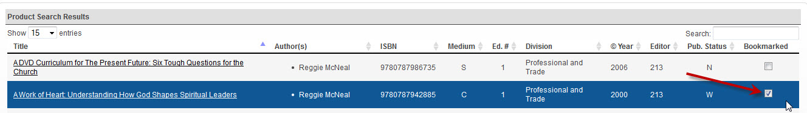

STEP 3: CHOOSING YOUR PRODUCT
Once you have found the title you want to work with, you can reach its landing page in two ways. Firstly, if this is a title you will be working with often, or if you want to easily find that title again, you can bookmark it.

When you choose to bookmark a title, that title is then saved in the My Projects page located in the main tabs bar in the upper right-hand corner of the page.

After you bookmark a title and go to the My Projects page, your bookmarked titles will be listed. Once you see the project you want to work with, click the title of that project, and you will be lead to the project landing page.

If you are planning to work with a title just once, and do not want to bookmark it, then you can simply click on the title link to get the project landing page.